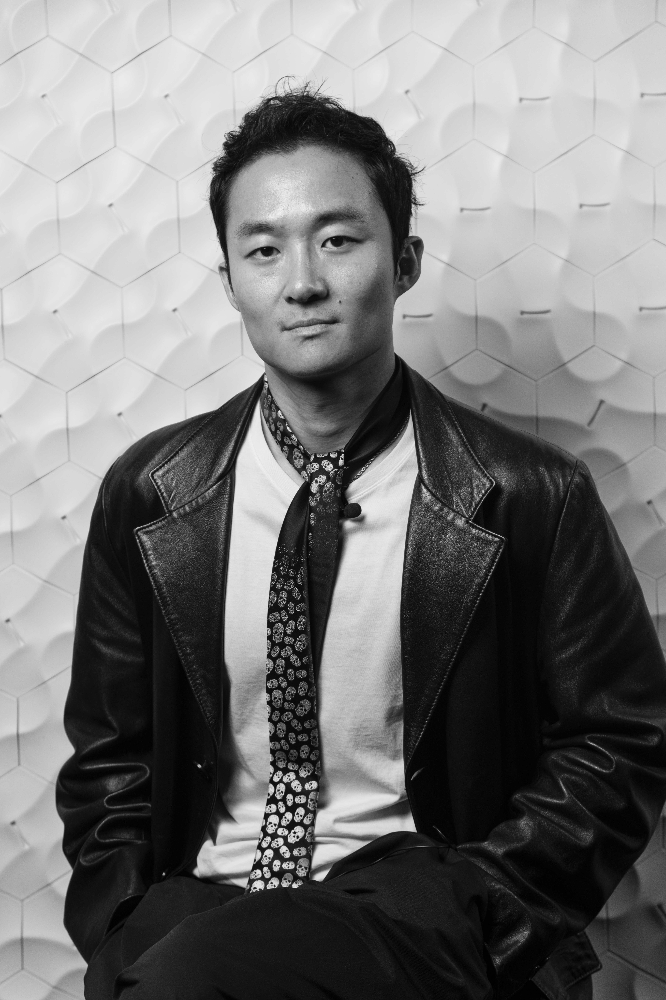
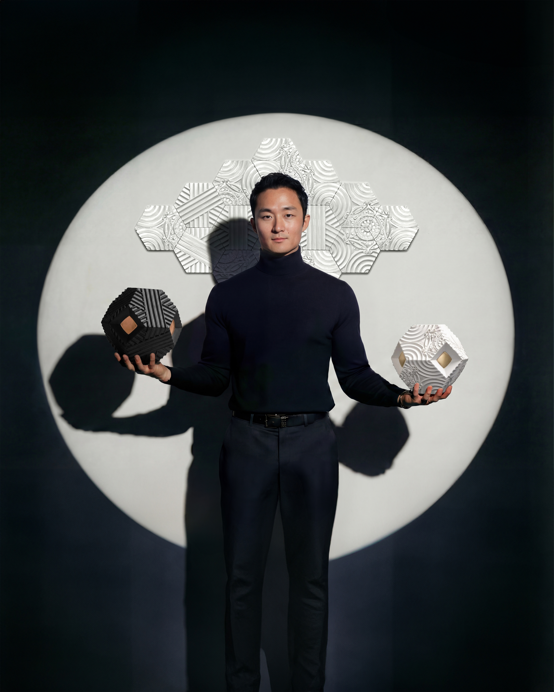
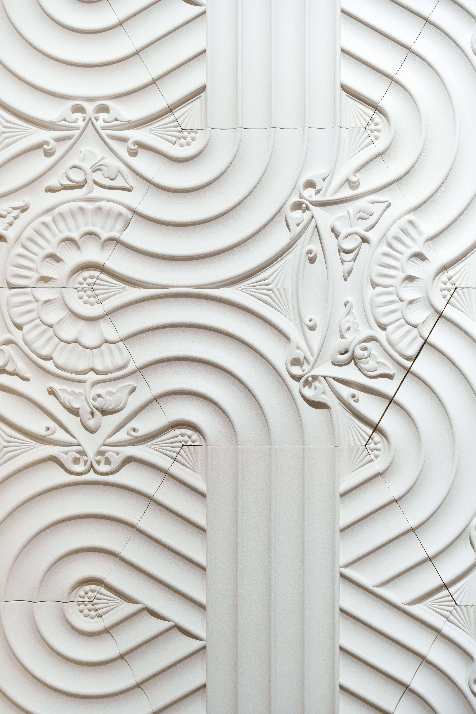
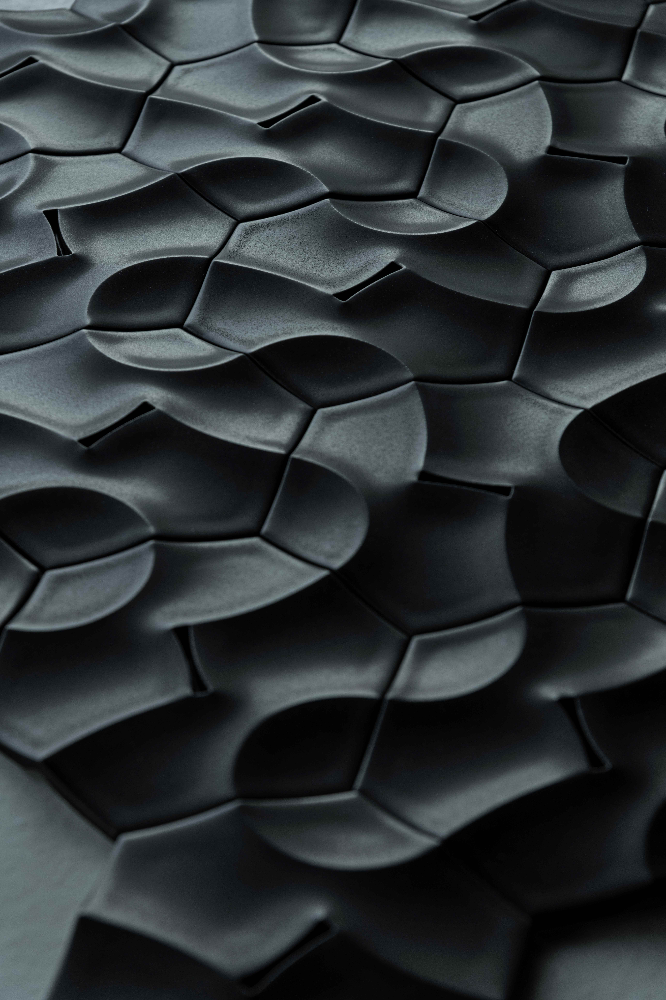

Kejun Li is a Milan-based artist-engineer whose practice sits at the intersection of structural logic, material craft, and perceptual experience.
Trained in civil engineering in China, Li spent the early years of his career on major bridge infrastructure projects across Africa — environments defined by total precision and total control. Since founding his studio in Milan in 2022, that discipline has been redirected: toward open systems, modular architectures, and works that activate the body as a site of completion.
Presented at Milan Design Week, his projects have led to collaborations with international companies and manufacturers. He has been featured by Financial Times describe him as “The Chinese engineer who unleashed his artistic sensibilities” (2025) and shortlisted for Wallpaper* China's Emerging Designer of the Year (2025) .
I design the rules. You complete the work.
Projects & Collaborations
Gemini

Gemini, 2025 © Kejun Li

This collection with Bosa ceramiche explores duality through modular geometry, transforming flat hexagonal tiles into sculptural forms where curves and lines coexist in balance.
Fuga
 Fuga close up, 2025 © DeMarchiVerona
Fuga close up, 2025 © DeMarchiVerona
Fuga is a modular ceramic collection where color becomes a primary variable, transforming a single geometric system into 13 distinct and endlessly evolving spatial variations.
Neo-baroqueism

Neo-baroqueism, 2025 © Guanqiao Li

A modular tile system that reimagines architectural ornament through geometry and user interaction, exploring how historical decorative languages can be revitalized with modern fabrication and participatory engagement.
Cadenza

Cadenza in noir matt, 2025 © Andrea Maino

A hexagon-based ceramic tile collaboration with De Marchi Verona capable of generating three-dimensional surfaces and spatial rhythms, originally developed through computational exploration, this collection was later adopted for commercial production and presented internationally.
A tile and its thousand possibilities
 Alcova, 2023 © Kejun Li
Alcova, 2023 © Kejun Li
This project explores how a single fixed tile can generate endless visual outcomes through random, playful tessellation, transforming an ordinary object into an interactive and self-exploring design experience.
For collaborations, commissions or inquiries:
Kejun.li.17@gmail.com